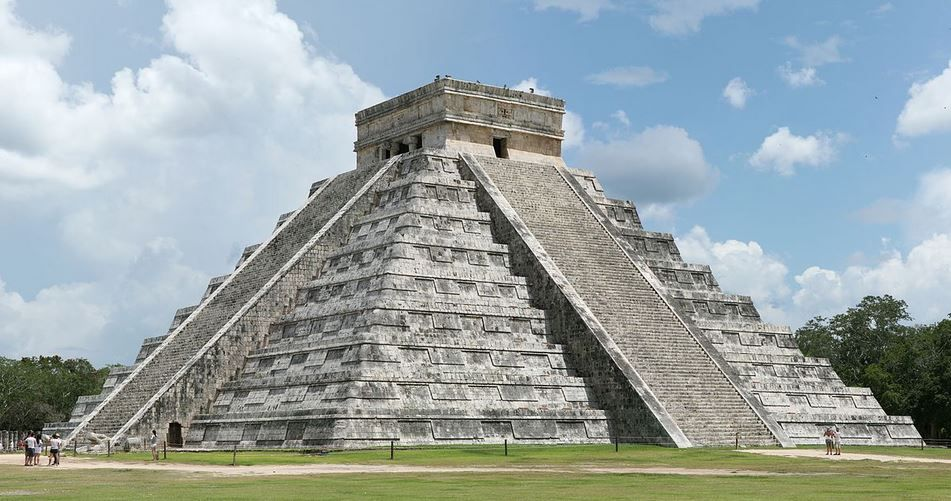

Chichén Itzá
OVER TWO MILLION VISITORS IN 2016
Chichén Itzá was an ancient Maya city that eventually
became part of the Maya-Toltec civilization. It flourished
until around A.D. 1200, and later joined a political alliance
with the cities of Mayapán and Uxmal. It had already been
abandoned by the time the Spanish arrived in the 16th century.
Archaeological excavations began in the early 19th century.
The ruins feature religious temples that epitomize Maya innovation
in astronomy and science. The Temple of Kukulkán has 365 steps, one
for each day in the Haab solar calendar. The temple is crowned
by a carving of Kukulkán, also known as Quetzalcoatl, the feathered
serpent deity.